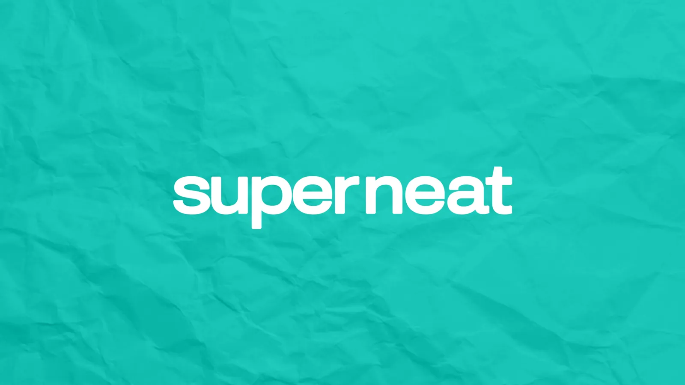
RIGGING TD · CONTRACT
Superneat
Rigging TD
Current gig. Rigging TD on a remote team, carrying the Mutant Tools workflow into a new pipeline.
- MAYA
- MUTANT TOOLS
- PYTHON
TECHNICAL ARTIST — RIGGING & PYTHON
I build rigs that animators actually like, and the tools that build the rigs. 600+ characters, 1000+ assets, Maya to Unreal — from Costa Rica to Vancouver, working remotely.
AVAILABLE · REMOTE · OPEN TO RELOCATION WITH SPONSORSHIP

RIGGING TD · CONTRACT
Rigging TD
Current gig. Rigging TD on a remote team, carrying the Mutant Tools workflow into a new pipeline.
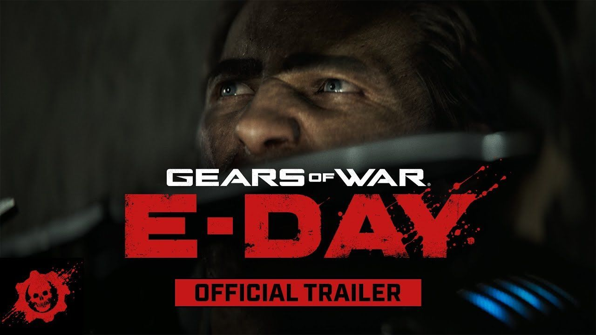
CHARACTER RIGGER 3 · MICROSOFT
Gears of War: E-Day
Body and prop rigs for AAA characters and skins in Unreal. Rod dynamics, Control Rig and Animation Blueprints, plus wrapping tools and Confluence docs so the next rigger does not start from zero.
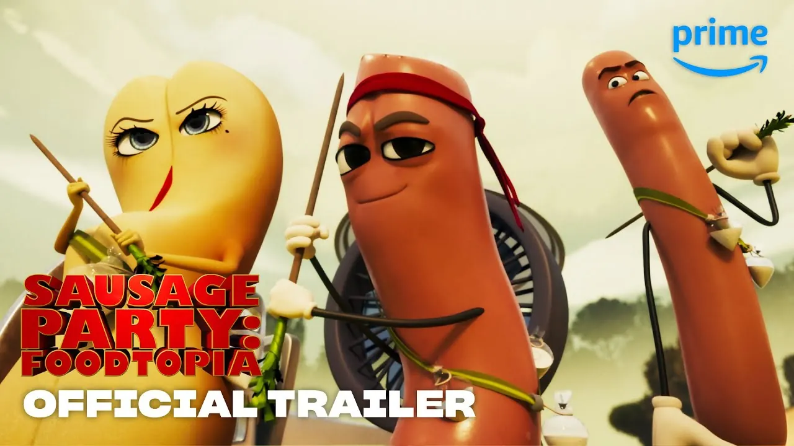
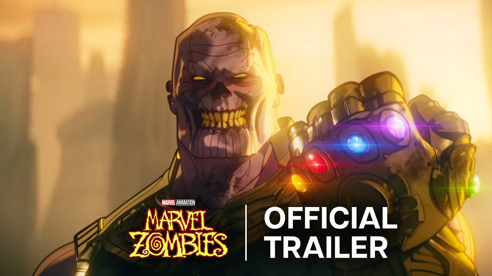
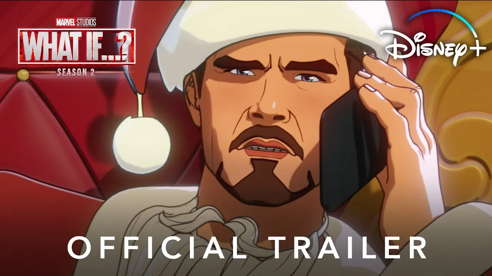
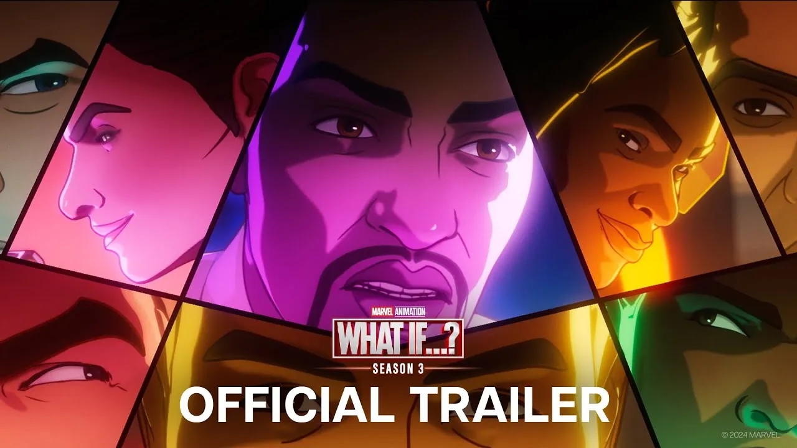
RIGGING SUPERVISOR · MARVEL · SONY
Sausage Party: Foodtopia · Sausage Party: Foodtopia — Season 2 · Marvel Zombies · What If…? Season 2 · What If…? Season 3
Ran the rigging department across five shows. Rebuilt the rigging system for What If…?, designed the pipeline from model intake to delivery, handled crowd rigs for 300+ assets, and built the save/load tooling the team lives in.
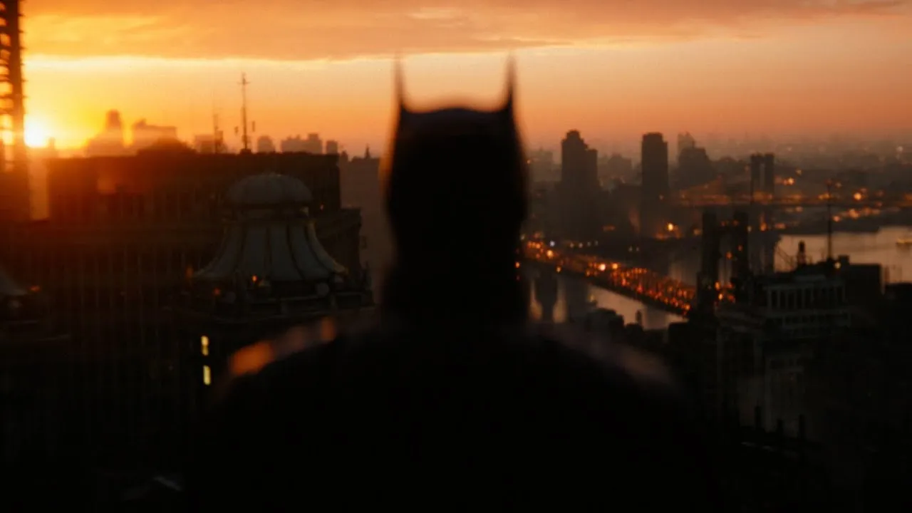
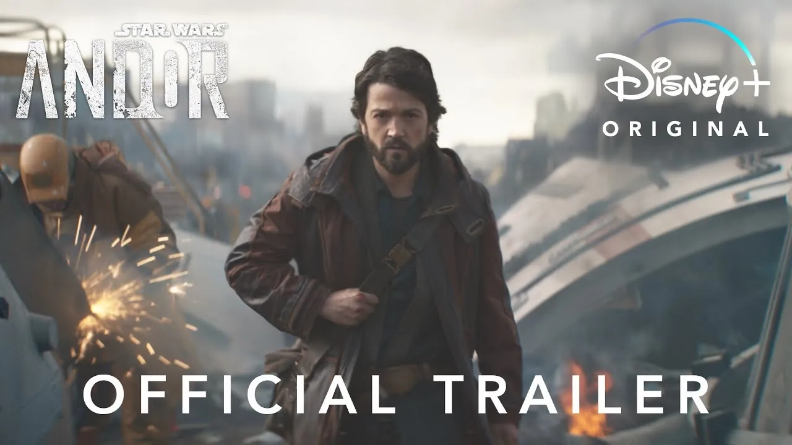
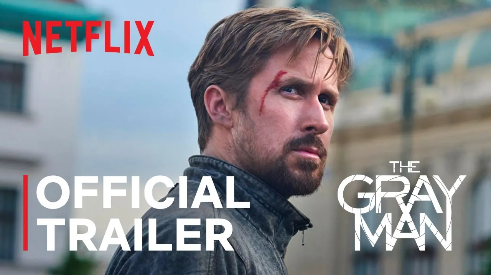
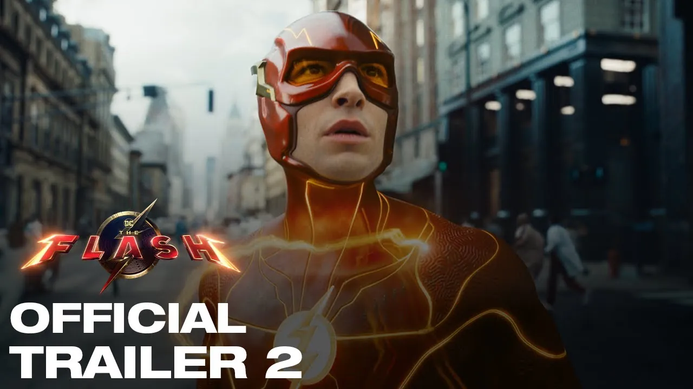
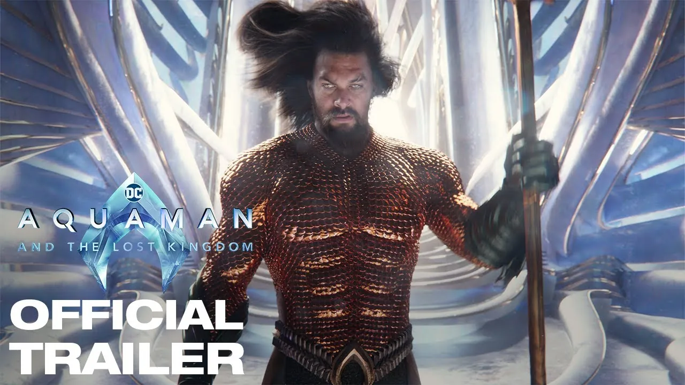
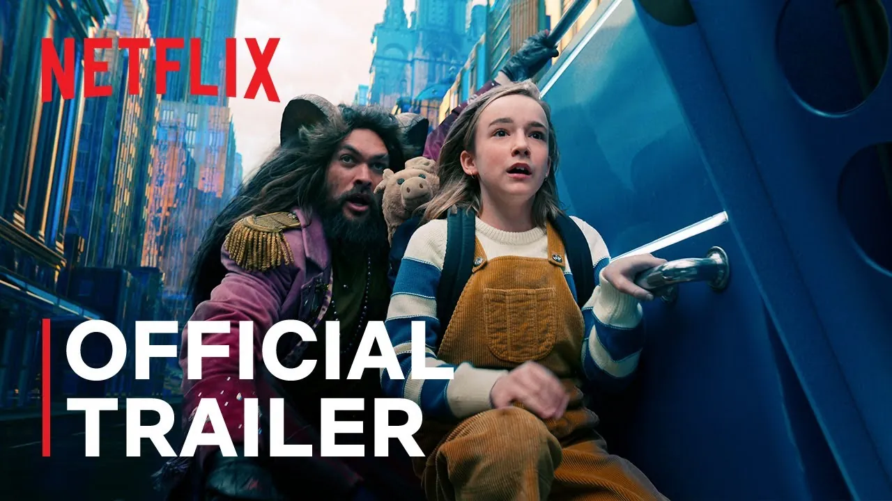
RIGGING DEVELOPER · CONTRACT
The Batman · Andor · The Gray Man · The Flash · Aquaman and the Lost Kingdom · Slumberland
In-house rigging tools across the slate — core asset classes, shape tools, crowd helpers. Converted custom nodes to vanilla Maya so external vendors could open the rigs. Git and PEP8, because other people have to read it.
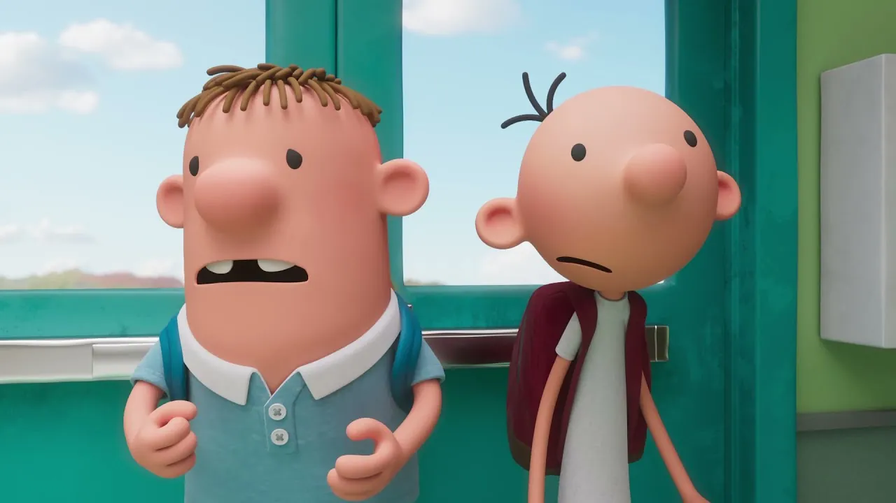
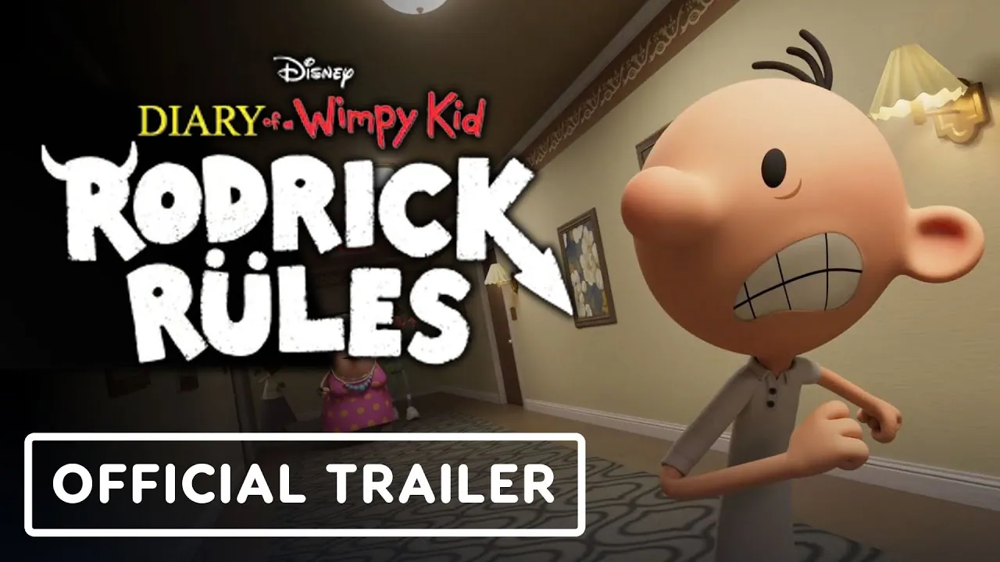
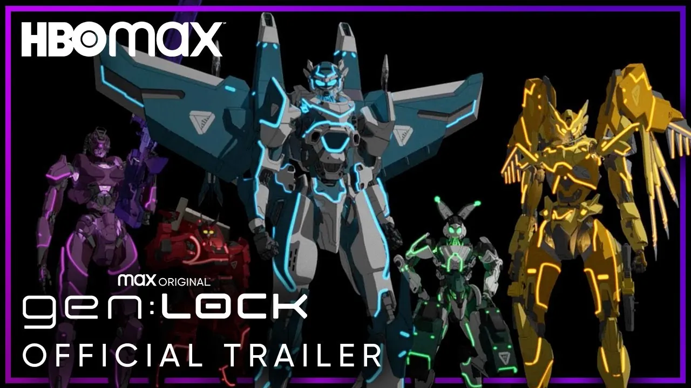
RIGGING ARTIST · CONTRACT
Diary of a Wimpy Kid · Diary of a Wimpy Kid: Rodrick Rules · gen:LOCK Season 2
Body, facial and prop rigs on almost entirely custom productions. The scripts I wrote to survive the schedule became the team toolset and halved delivery times.
T H E R E S T O F I T
Fair Play Labs, Bluetape, Estudio Shout, Lasalapost, Relish, Martestudio, Artella and the rest — with dates, tools and references — live on LinkedIn.